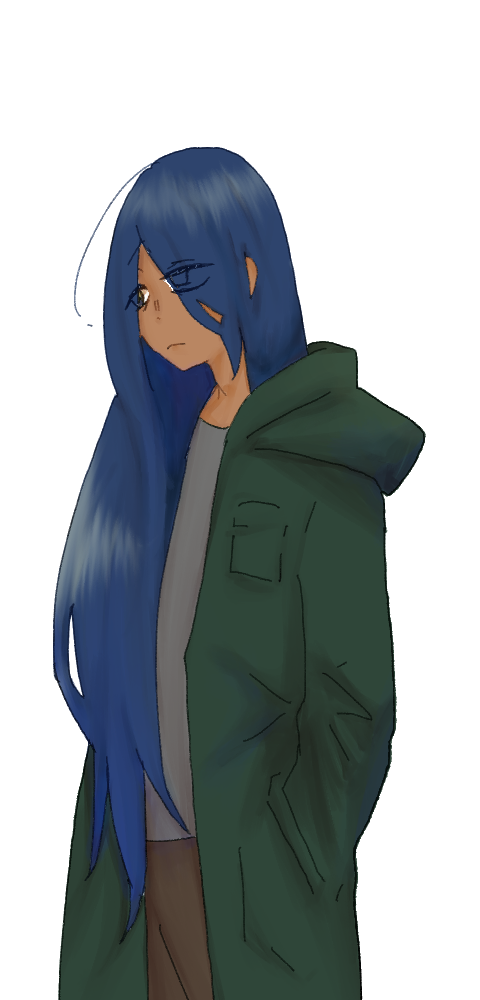
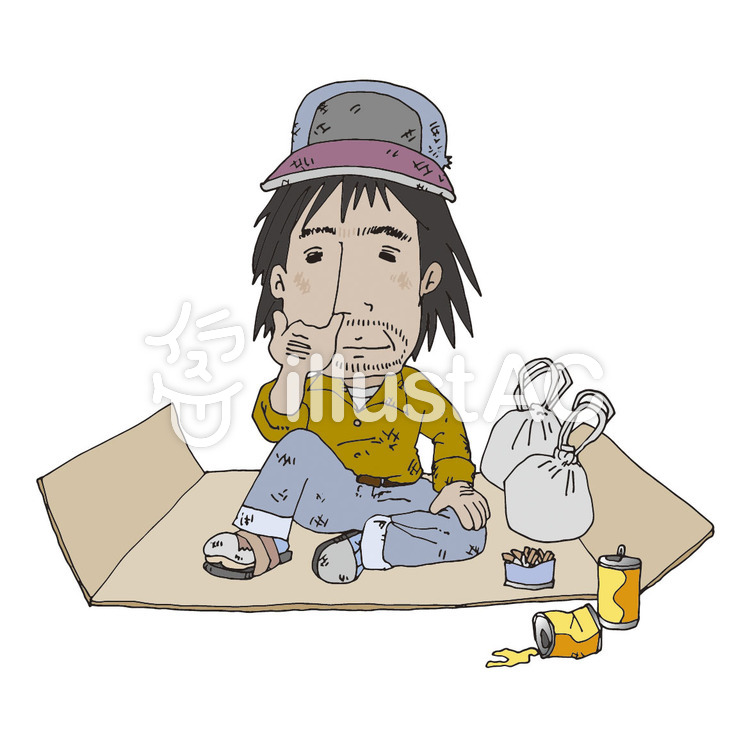

探索者の皆様
神話生物とやり合うイカれたメンバーを紹介します
-
吉川 周
職業:警察
正義を愛し、悪を挫く法の番人。 高い拳銃技能、慎重な判断が持ち味。独身。 シナリオでの活躍①:#イゴーロナク・ゲーム編
次々と届く倫理観を一脱した命令に屈さず行動。
友が闇落ちする中、強い心を持ち身を挺して灰崎を助ける。
最終決戦では、デザートイーグルを片手に神話生物と対峙。
クソみたいな命中率の中、生還する活躍をみせる。
『これは職権乱用じゃない。日頃の付き合いの延長だよ』
-

小鳥遊 棗(ナツメ)
職業:放浪者
「生きるのに必要最低限のものがあればいい」が信条の現代のスナフキン 顔のAPPに反して、やや直情的な言動が魅力。 たまに髪を売るので角刈りになるらしい。 キャラシ シナリオでの活躍①:#イゴーロナク・ゲーム編
どちらかと言うと欲望に忠実に行動。
卑劣な命令と誘導をあっさりと受け入れる度量の大きさを見せつける。
高い戦闘力を遺憾なく発揮し、22才女性友人のHPを0にする活躍を魅せる。
『やっぱり灰崎を〇しておけばよかったじゃん！』
-

山根 シゲル
職業:放浪者
分かりやすい放浪者。金銭に忠実。 その風貌とは裏腹に頭がキレ、抜け目のない行動がキラリと光る。 48才という年の功だろうか、言いくるめる力が強い。 キャラシ シナリオでの活躍①:#イゴーロナク・ゲーム編
大変積極的に指令をこなす。万引きを一度失敗しても再チャレンジする姿には
諦めないことが如何に大切であるかを考えさせられる。
リアルファイトは苦手だが、最終決戦では神話生物に堂々と立ち向かう姿を見せてくれた。
『おぉ…宝石じゃあ…！』